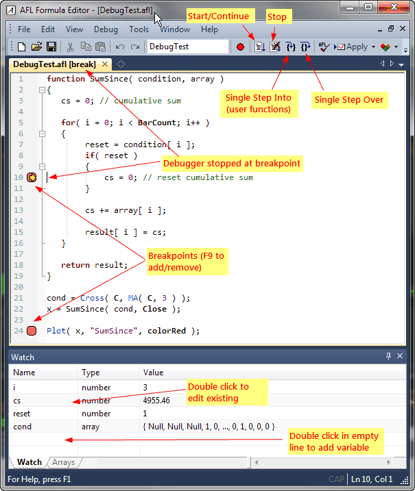
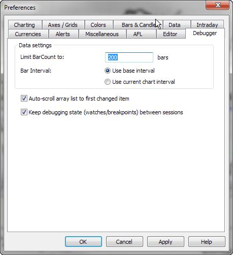

Basics
To run the formula under the debugger, simply choose the Debug->Go (F5 key) menu in the Formula Editor or click the toolbar button marked below as Start/Continue.
In most cases, the code would execute in a blink of an eye, so you won't even see if it worked. You can stop the execution long enough to see what is happening by setting a breakpoint and then stepping ahead.
Breakpoints
To set a breakpoint, move the cursor to the line where you want to stop the execution and choose Debug->Insert/Remove Breakpoint menu or press the red circle button in the toolbar, or press F9 key. The breakpoint will be shown as a red circle in the left margin.
Breakpoints can be added/removed at any time, before you start debugging and while you are debugging. They can be added/removed when the debugger is stopped at a breakpoint and while the code is running.
Now, start debugging again (Debug->Go). Execution should stop at the line marked with the breakpoint sign, before this line's code actually executes. A yellow arrow shows the current position of execution as shown in the picture below.
Single stepping
You can cause the code to execute by stepping ahead (Debug->Step Over, F10 key). You could also click the Debug->Step Into (F11 key) option. The difference between Step Into and Step Over is observed when you try to single-step a call to a user-defined function.
If the line contains a call to a user-defined function:

Examining the contents of variables
When the debugger is stopped at a breakpoint or stopped by single-stepping, you can examine the contents of variables anywhere in the code. To quickly check the content of any variable, simply hover the mouse over the variable. After less than one second, a tooltip will appear showing the type and value of the variable.
The Watch window
If you are interested in watching several variables easily, you can use the Watch window. To open the Watch window, use the Window->Watch menu.
To add a new variable to the Watch window, double-click on an empty row and type the variable name. You can also simply select the variable in the editor and drag it over the Watch window.
To edit an existing variable in the Watch window, double-click on its name and type the variable name.
To delete the variable from the Watch window, click on the name once (select it) and press the DELETE key.
In addition to variables, you can use an entire expression in the Watch window. You can either drag-drop expressions from the editor onto the Watch window, or type the expression after double-clicking, as you would with variables. The expression evaluator used by the Watch window supports the following:
Note that only identifiers that can be used in the Watch window are variable identifiers. You cannot use function identifiers, so you can't call functions from the Watch window.
The values entered in the Watch window are watched for changes, and if a change in value occurs between two debugging steps, the given value is highlighted with a yellow background. Numeric (scalar) values are displayed in green when they have increased or red if they have decreased.
Arrays tab
The 'Arrays' tab in the Watch window shows exploration-like array output for detailed examination of array contents (the first 20 arrays from the Watch window are reported). It is very convenient, as arrays are usually large, and having them in a table format together with the bar number and corresponding date/time stamp makes it much easier to see their contents. Additionally, each element of each array is watched for changes, and an individual item change is highlighted and auto-scroll occurs so that the first changed item is always visible in the 'Arrays' tab.
Output window
When you run the code in the debugger, you can use the Output window (open it using the Window->Output menu) to display all text that is printed using printf() function. When the formula finishes its execution, the text "Debug session has ended" is displayed in the Output window.
Debugger preferences
Tools->Preferences window now contains a dedicated page with Debugger settings.

The settings are as follows:
Keyboard shortcuts
The following keyboard shortcuts are available in the debugger mode:
Tips & tricks
If you want to stop execution when a certain condition is met, put the breakpoint inside the if statement like this:
if(
reset > 0 AND param > 4 )
{
cs = 0; // PUT BREAKPOINT
IN THIS LINE and it will stop only when condition is met
}
Breakpoints currently work with:
Breakpoints that you place on other lines won't trigger. The AFL editor won't allow to place a breakpoint on an empty line, or a line that begins with a // comment or a sole brace
You need to be aware of the fact that breakpoints placed inside conditional statements like if() are only hit when a given condition is met. So, for example, if you have code like below, the code inside 'if' statements won't execute unless it is actually run in the chart (indicator) or in a portfolio backtest in the New Analysis window.
if( Status("action")
== actionIndicator )
{
// breakpoint placed here won't trigger under debugger
because condition above is not met
}
if( Status("action")
== actionPortfolio )
{
// breakpoint placed here won't trigger under debugger
because condition above is not met
}
AmiBroker executes code in various contexts indicated by the "action" status. Parts of the code can be conditionally executed in certain contexts using statements like shown above. This allows, for example, to call Plot() only in charts and to access the backtest object only when it is available.
As of version 6.10, the debugger runs the code with the actionBacktest context. To debug code that is run conditionally in other contexts, you can temporarily disable the conditional check, but please note that you still cannot access certain objects because they are simply not available. Specifically, GetBacktesterObject() when called anywhere outside the second phase of a portfolio backtest within New Analysis would return an empty (Null) object. In the future, this limitation may be removed.